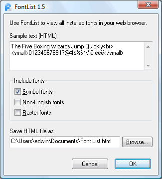
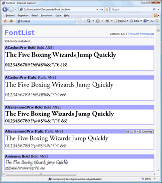

Use FontList to view all installed fonts in your web browser.
|
If you design something and you are looking for the right font, it can take a lot of time. In word processing, DTP and (web)design programs, you can often only select one font at a time. Finding the right font often means searching through all your fonts. With FontList, you can create a HTML file that will show all the fonts installed on your computer. With your browser, you can pick the right font in no time. Using FontList, you can change the predefined sample text, exclude seldom used fonts from the list and change the path for the HTML file. In your browser, you can change the style of a font and zoom in on a font. You can also view the character map of a font. And, for some, maybe the most important feature, you can create a print out of all your fonts. FontList is freeware. Download here:Download FontList1.6-installer.exe (71k) The download takes about ten seconds with a 56k modem. Supported operating systems: Windows 95 - Vista. For more information, see the Read Me file and the release history.
|
Screen shots  FontList interface.  Output in browser (click to see a sample). |
||||||||||||